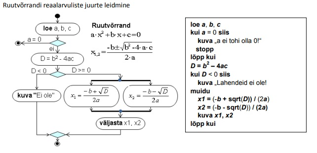

Ühtset ehk unifitseeritud modeleerimiskeelt ehk UML kasutatakse süsteemide visuaalseks analüüsiks, kavandamiseks, loomiseks ja dokumenteerimiseks. Keel kasutab valikut lihtsad graafilisi kujutisi (sümboleid) infosüsteemide ja rakenduste erinevate komponentide, olemite ja tegevuste tähistamiseks ning elementide ühendamiseks. Kujutiste sisse käivad kindla tähenduse ja struktuuriga tekstid. Programmeerimiskeele asemel on tegemist pigem visuaalse keelega.

UML alla käivaid diagramme saab omakorda jaotada paljudeks erinevateks diagrammitüüpideks: